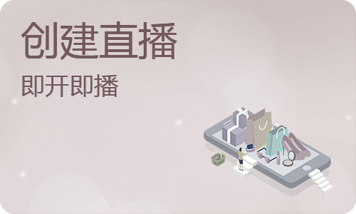
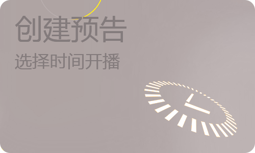

<ion-content>
    <ion-icon name="close-outline" class="closebtn" (tap)="goBack()"></ion-icon>
    <div class="tbox">
        <ion-text class="ctxt">创建直播</ion-text>
        <ion-text class="stxt">选择需要创建的类型</ion-text>
        <div class="ltbox">
            <ul>
                <li class="tbox" (tap)="chooseLiveType(0)">
                    
                    
                    
                </li>
                <li class="tsplit"></li>
                <li class="tbox" (tap)="chooseLiveType(1)">
                    
                    
                    
                </li>
            </ul>
        </div>
    </div>
    <div class="cbox">
        <ion-text class="ttxt">填写创建内容</ion-text>
        <div class="cbox-tbox">
            <div class="uploadDiv">
                 <div class="file">

                     <input type="file" class="inputfile" id="file" accept="image/*" file-model="images" (change)="handleFileInput($event.target.files)" />
                 </div>

                

            </div>
            <div>
                <ion-textarea cols="45" rows="1" placeholder="直播标题" [(ngModel)]="liveTitle" (ionChange)="check()">
                </ion-textarea>
                <ion-textarea cols="5" rows="5" placeholder="直播描述" [(ngModel)]="liveDesc" (ionChange)="check()">
                </ion-textarea>
            </div>
        </div>
        <ion-list lines="full">
            <ion-item  *ngIf="cyCheck">
                <!-- <ion-label>时间选择</ion-label>
                <ion-note slot="end">{{llxtxt}}</ion-note>
                <ion-icon slot="end" class="item-icon-right iconfont icon-forward"></ion-icon> -->
                <ion-label>时间选择</ion-label>
                <ion-datetime displayFormat="YYYY-MM-DD HH:mm" min="2020-03-14" [(ngModel)]="openLiveTime" (ionChange)="changeDate()" max="2100-12-09" cancelText="取消" doneText="确定" placeholder="请选择时间"></ion-datetime>
            </ion-item>
            <ion-item (tap)="showTypeAction()">
                <ion-label>直播分类</ion-label>
                <ion-note slot="end">{{ltypetxt}}</ion-note>
                <ion-icon slot="end" class="item-icon-right iconfont icon-forward"></ion-icon>
            </ion-item>
            <ion-item (tap)="addGoods()">
                <ion-label>添加商品</ion-label>
                <ion-icon slot="end" class="item-icon-right iconfont icon-forward"></ion-icon>
            </ion-item>
            <ion-item lines="none" (tap)="showLxAction()">
                <ion-label>直播类型</ion-label>
                <ion-note slot="end">{{llxtxt}}</ion-note>
                <ion-icon slot="end" class="item-icon-right iconfont icon-forward"></ion-icon>
            </ion-item>
        </ion-list>
    </div>

    <ion-button fill="clear" shape="round" (tap)="startLive()" [ngStyle]="{'background': cbtnFlag?'#ff6b71':'#ffffff','color':cbtnFlag?'#ffffff':'##B8B8B8'}">
        {{cbtxt}}
    </ion-button>
</ion-content>
